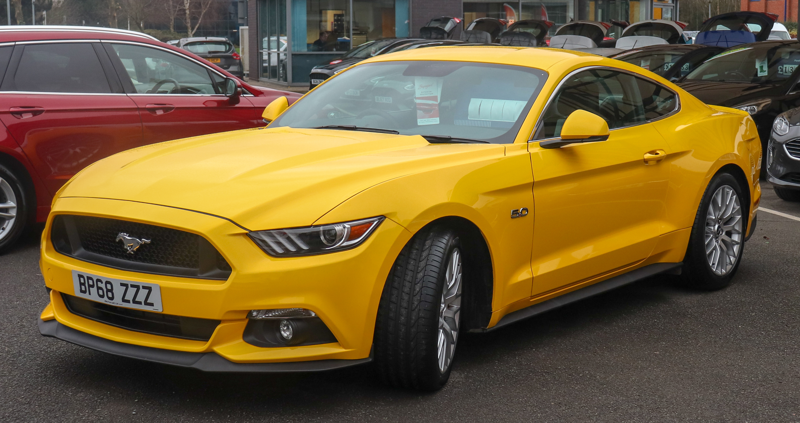

O Ford Mustang é um automóvel desportivo produzido pela Ford Motor Company. O carro foi apresentado ao público em 17 de abril de 1964 durante a New York World's Fair. O Mustang, apesar de ter sofrido grandes alterações ao longo dos anos é a mais antiga linha de automóveis da Ford. cujo nome se inspira na única raça de cavalo selvagem do pais. Foi o primeiro "Muscle Car" da história, sendo seguido anos mais tarde por modelos concorrentes inspirados claramente nele.

O Panamera é um automóvel de luxo sedã de 4 portas, de porte grande lançado pela Porsche em 2009. Tem motorização dianteira V6 e V8 feitos em Stuttgart, a carroçaria é fornecida já pintada pela fábrica da Volkswagen localizada em Hanôver, e a montagem final ocorre em Leipzig. Treze cores e combinações de materiais podem ser escolhidas para o interior do Panamera. As versões são S, 4S e Turbo. Nas duas versões mais “fracas”, o porta-malas tem capacidade para 445 litros, enquanto a Turbo tem 432 litros.

O Volkswagen Typ 1, popularmente conhecido como Fusca (no Brasil) ou Carocha (em Portugal), foi o primeiro modelo de automóvel fabricado pela companhia alemã Volkswagen, sendo produzido entre 1 938 e 2003. Foi o carro mais vendido no mundo, ultrapassando em 1972 o recorde que pertencia até então ao Ford Modelo T, de origem estadunidense. Foi produzido até 2003, no México, onde era chamado de VW Sedan. Ele era parte de uma edição comemorativa chamada Última Edición, limitada a 3 000 carros. O último exemplar marcou o fim da longa produção de 65 anos do Fusca, durante a qual foram fabricados 21 529 464 unidades, números que fazem dele o modelo único mais produzido do mundo em todos os tempos.